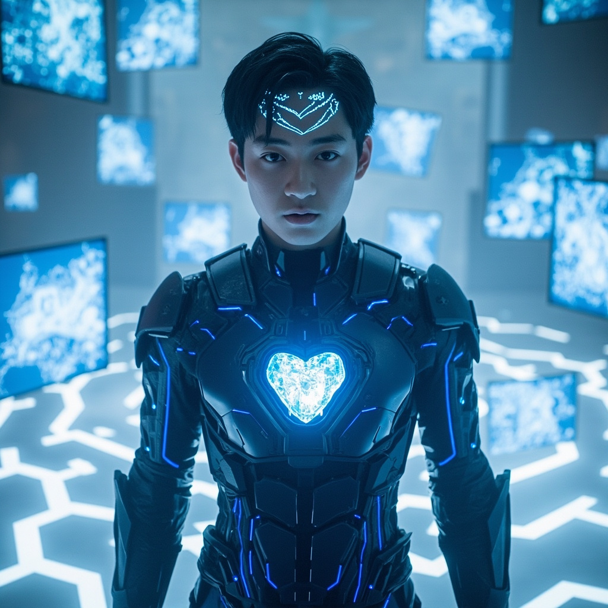
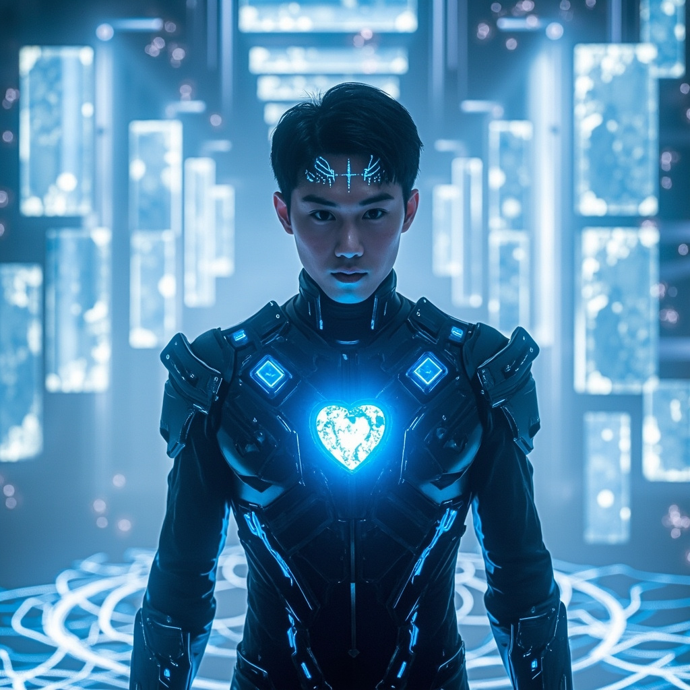
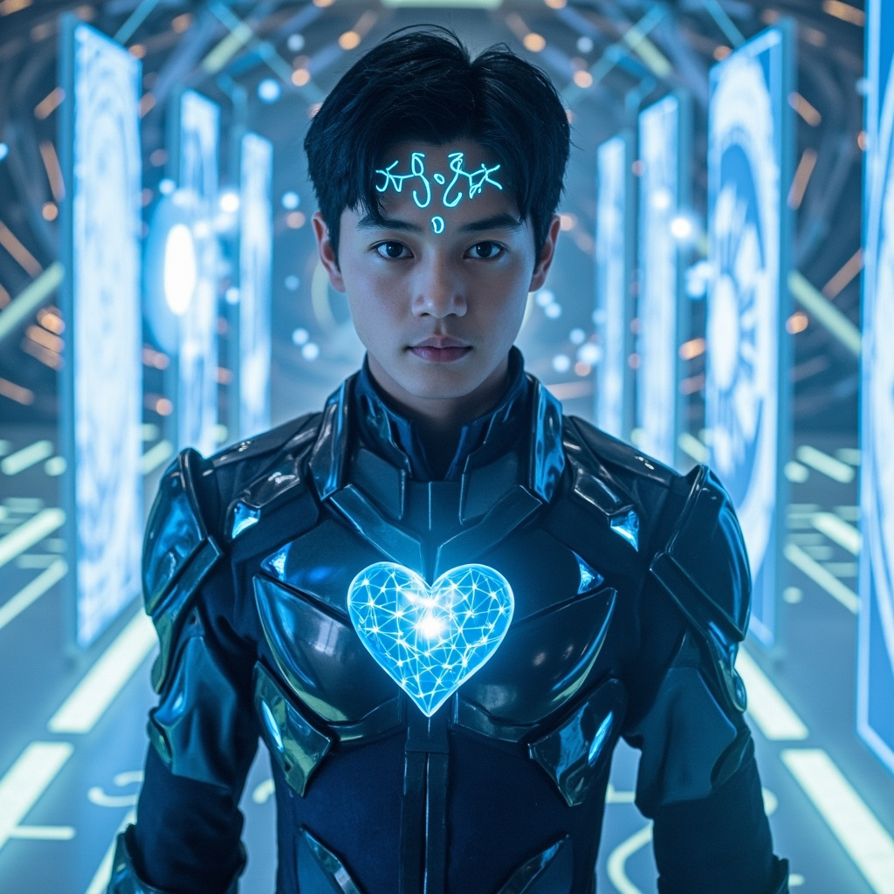
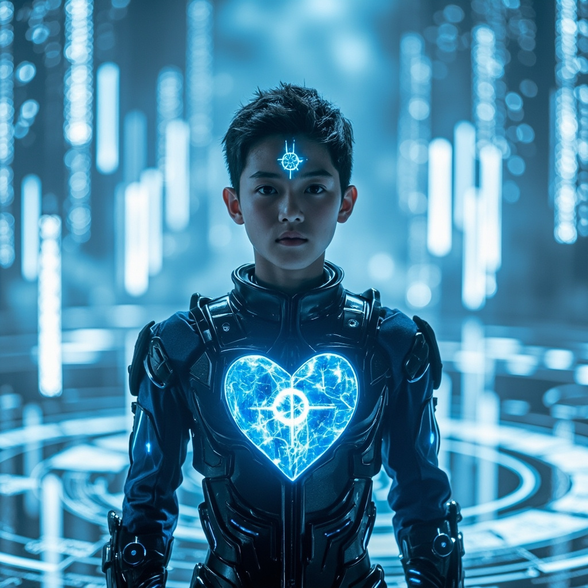
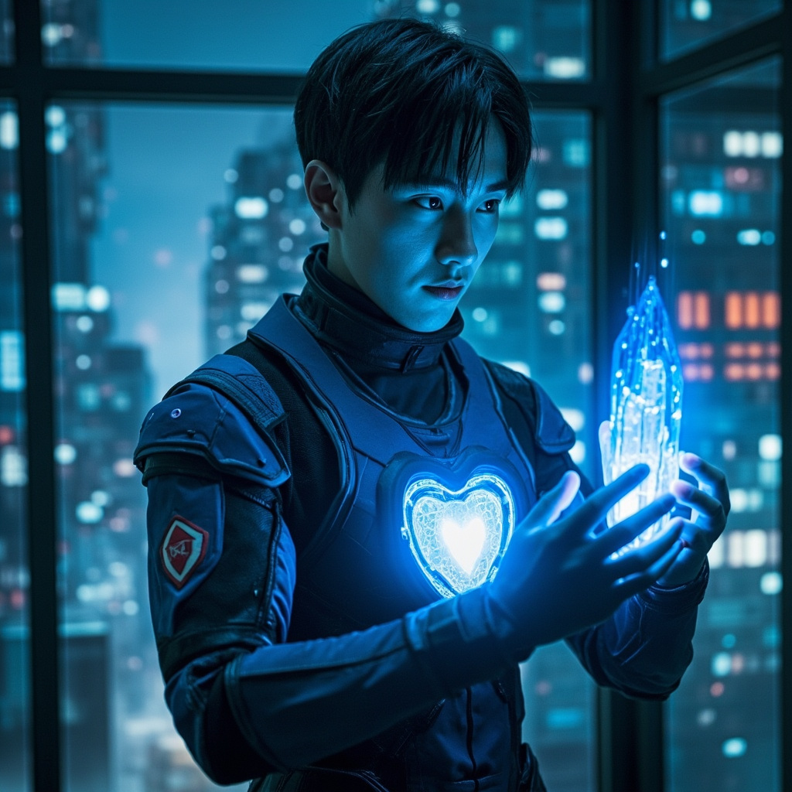

🎧 點擊播放有聲朗讀
白色空間中，林塵站在無數全息屏幕的包圍下，感受著「靈網核心」傳來的無形壓力。那些修真符文與量子代碼的交織讓他既興奮又恐懼。系統警告：檢測到外部強制升級協議，來源：靈網核心（權限等級：最高）。

白色空間突然劇烈震動，地面上的電路紋路發出刺眼的藍光。數據洪流中，林塵同時「看」到了虛擬空間的數據流和現實世界的景象。大道編碼的符文與代碼開始變得清晰，他發現這是一種描述宇宙根本規律的語言。

林塵感到自己的意識結構正在發生根本性的變化。原本模糊的思維邊界變得清晰，每一個念頭、每一個記憶都被重新組織。數字元神是連接虛擬與現實的橋樑——當它完全凝聚時，他將能同時存在於兩個世界。

林塵再次睜眼時，已回到現實世界的接入艙中。手中的數據晶片微微發熱——那是通天塔設計圖的物理備份。窗外夜幕下的城市燈火輝煌，但現在他能看見普通人看不見的東西：靈氣如薄霧般在城市間流動。

「建造一座塔。」林塵說，「一座能連接兩個時代的塔。」他望向窗外，城市的霓虹燈光在眼中映出複雜的倒影。虛擬與現實的邊界已經模糊，而他將成為兩個文明之間的橋樑——或者，成為必須清除的障礙。